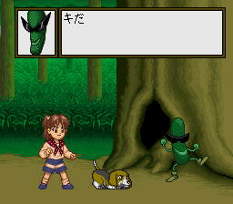

It’s been a while since i made a true “update” on this blog post. Truthfully, a long has changed since then.
…Recent posts
Update for 2025 —
I'm Fed up with the homebrew community —
I will start this post by making a few statements :
- Yes, i made a porn game kinky game
- Yes, it was about Pit being fucked by Dark Pit. Partly the reason why was to snub Nintendo.
- No, that doesn’t make me a “rape apologist”, “sexist” or other absurd claims.
- The reason why i inserted the anti-Hamas statements after the backlash was because i suspected a few of them to be supporters (of Hamas). It turns out, i was right. (more on that later)
- I was naive to think people would behave in a proper way if i had posted the game on a public channel.
- I was quick to accuse trapexit for banning me from the 3DO server but it turns out, it was Archive3DO instead. (The latter did not talk to me until i exposed them over the Fixel drama)
- No, i will not apologize for making such a game and plenty of other devs shouldn’t have to apologize for their games except for the fact they suck. (Admittely, the game itself was nothing perticular)
- Avoid RetroRGB or Unbudget Computer discord server if you are public about your political beliefs
So a quick recap.
…
CASIO Loopy, RGB mod possible ? —

RGB video, possibly the best you can get video quality wise in the analog realm.
Most people back then relied on Composite but a few (including most people in France) had RGB video. In fact, the very first home console to get proper RGB video was the French release of the CBS Colecovision in 1983.
…
OpenLara Port ideas (Part 1) —

In late 2021, XProger ported his OpenLara engine to the 3DO.
https://twitter.com/XProger_san/status/1453488510833414152
The port is quite amazing and definitively worth a look if you own a 3DO.
…
Re-updating my blog —
So yet again, i have decided to switch to another blog solution. I pretty much forgot about the ones i used in details but basically it went something like :
…
More work on SMS Plus GX —
Hello guys, Another quick update on SMS Plus GX !
Unfortunately, i realised that i broke save states along the way some time ago, and it took me some time to fix it. It took me a while to fix it but i managed to do it.
…
My fork of SMS Plus GX (itself based on SMS Plus) —
Hello guys, i thought i would write this post to reflect me working my fork of SMS Plus and the progress and stuff i made on it.
…
More RS-97, bittboy news —
Hello guys, hope you had a great year. (A bit late for that but meh) If you follow my stuff on Dingoonity & youtube, you may have noticed that i got a bittboy and ported some stuff to it.
…
Back to N64 stuff and RS-97 news —
So it’s been a while again since i wrote anything on here. I thought i might as well talk about what i’ve been doing recently !
…
RS-97 stuff and more —
After getting 2 RS-97, i worked on a new custom firmware for the RS-97. It took me a while, and it was quite painful but here it is for all the revisions as Internal :
…